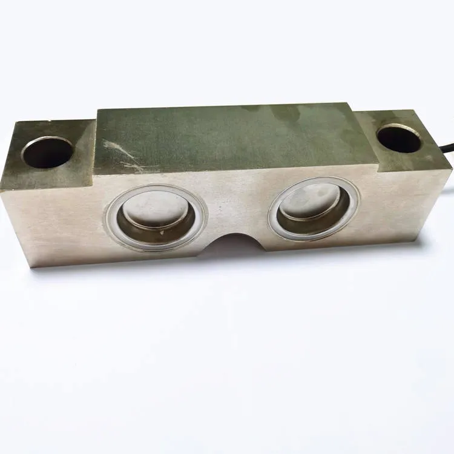

Database · Sensors
Keli Sensing
Keli Sensing (603662.SH) is a Ningbo leader in strain-gauge force sensors, expanding into six-axis force sensors for robots and humanoids.
Sensor Force Listed Ningbo

Company Overview
- Keli is China's leading maker of strain-gauge force sensors, used in weighing, industrial and test applications.
- It is expanding into six-axis force sensors, a critical component for robot force control and dexterous manipulation.
- Keli is a key supplier play on the humanoid-robot sensing boom.
Key Facts
| Full Name | Ningbo Keli Sensing Technology Co., Ltd. |
|---|---|
| Chinese Name | 宁波柯力传感科技股份有限公司 |
| Founded | 2002 |
| Headquarters | Ningbo, Zhejiang, China |
| Stock Code | 603662.SH |
| Core Products | Strain-gauge force sensors, six-axis force sensors |
| Status | China's largest force-sensor maker |
Actuators & Sensors
- Six-axis force/torque sensors for robot wrists and feet.
- High-precision strain-gauge weighing sensors.
- Custom sensor solutions for OEMs.
Supply-Chain Analysis
- Keli masters strain-gauge and signal-conditioning technology.
- Ningbo manufacturing base with large volume.
- Expanding robotics-grade sensor production lines.
Competitor Comparison
Versus PaXini and foreign force-sensor makers (ATI): Keli competes on domestic scale and cost for six-axis sensors, while PaXini focuses on tactile arrays.